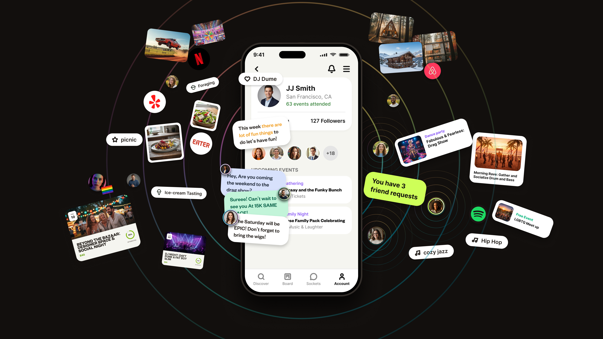
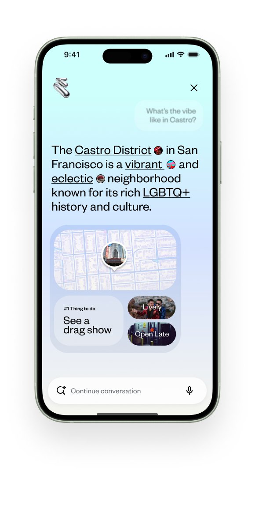
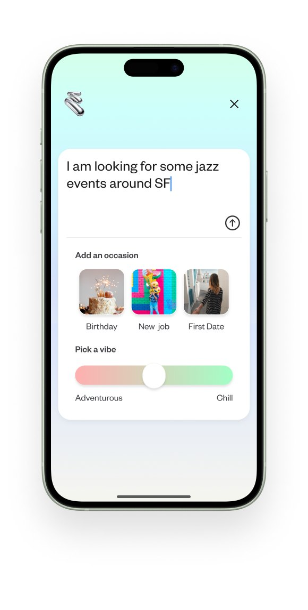
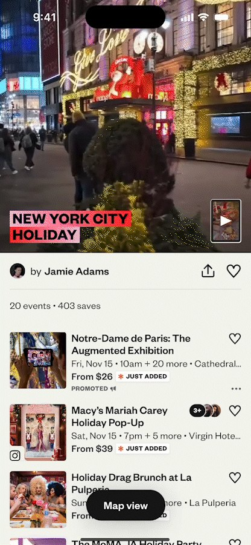
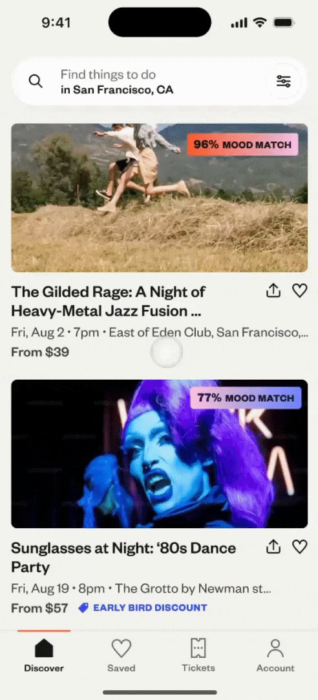

01
The Concierge
A trusted guide that understands intent and recommends for any occasion. Two forms: AI search with a conversational welcome and better recommendations, and a conversational feed with in-feed prompts and micro-tuning.
Design concepts for conversational event discovery, developed with OpenAI as an early partner: finding the right event from how people actually describe what they want to do.

It is hard to find great things to do. People describe an occasion, not a category: who they are with, the mood they want, the night they have in mind. Search results matched what and where, and dropped the rest of what people told us.
OpenAI was looking for partners to explore how generative AI changes the web, starting with the search box. For Eventbrite, that meant a chance to match people to events by vibe and occasion, not just by keyword.
Mapped where language models could help across the whole journey: inspiring plans at the top of the funnel, matching an occasion during search and browse, answering questions on the listing page, and helping people get ready after they book.
Set one priority to prove first: match my vibe. The work focused on what models do well today (a deep read of the event inventory, a conversational way to gather context, and finding relationships between events that keywords miss) and kept real-time data, voice and private ranking signals out of scope.
Directed the design team through four concepts, each with a working prototype, and partnered with engineering on a proof of concept that connected Eventbrite's event data to OpenAI.
Where conversational AI could change the experience, from first spark to the night itself.
“An authentic 48 hours in San Diego.” Scenes and plans, not single listings.
Express the occasion and the group, then see a range of events that fit.
Artist, venue, policies and parking in one answer, plus alternatives if this one isn’t right.
Nearby food, transport and event updates, building a relationship past the ticket.
People describe an occasion, not a category. These are the kinds of requests the concepts were designed around.
“Something for a couple to enjoy on a rainy evening.”
“My friend’s birthday is on a Sunday. Trying to find a hip hop vibe for brunch.”
“Something chill and low key, to get to know new people. Maybe be creative.”
“Date night. I don’t want a show, I want us to be talking. A night market would be ideal.”
What a model can see that keywords miss
Each concept was prototyped end to end, from the first prompt to a tuned feed of events.
A trusted guide that understands intent and recommends for any occasion. Two forms: AI search with a conversational welcome and better recommendations, and a conversational feed with in-feed prompts and micro-tuning.
Connect social accounts to see events from across your networks and the web in one place: an AI-built It-List, a map view, and simple ticket sharing with friends.
“Tune your vibes.” Pick the moods you’re in, watch your label update in real time, and get a feed badged by mood match. Editable any time from your account.
When scrolling stalls, a bottom sheet offers help. Three adaptive questions answered with GIFs lead to a dedicated feed of personalised suggestions.




The common thread: to serve people personally we need to know them, so every concept builds a profile that improves as people use it.
Led the design side of the partnership: framing the opportunity with product and engineering leadership, setting the priority, and directing the team's concepts and prototypes.
Took the work to the executive team as a point of view on how Eventbrite shows up in AI-led discovery.